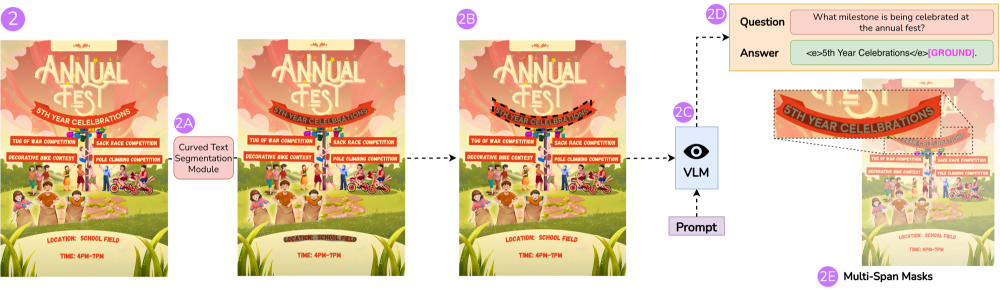
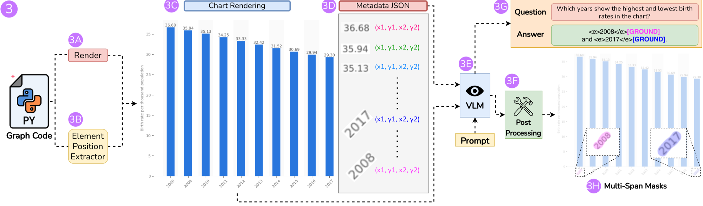
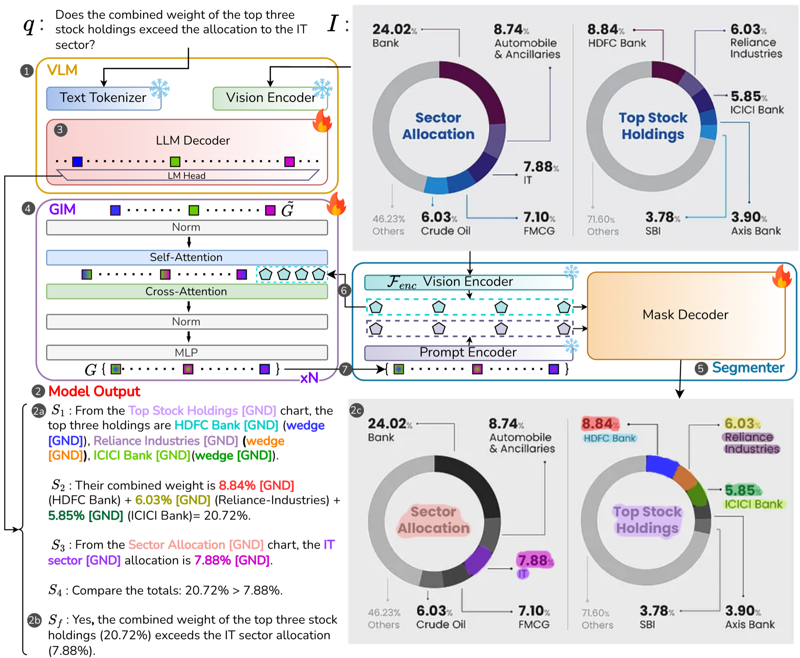
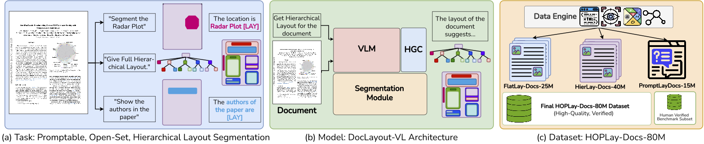

Rebuild the page faithfully — then teach models to point at it, with masks
REPLICA
ICDAR 2026 Oral
M3Grounder
CVPR 2026
DoCoG
ECCV 2026 Spotlight
DocLayout-VL
ECCV 2026
From rebuilding to grounding
A million rebuilt pages are a million labelled pages. Part 2 teaches models to point at them — with masks, not boxes.
M3Grounder
CVPR 2026
DoCoG
ECCV 2026 Spotlight
DocLayout-VL
ECCV 2026
The task
Document question answering
+
“What is JCB’s Net Sales?”
→
$30.00
+
“Which category has the largest share?”
→
Housing
Today’s VLMs do this well — on text, tables, charts, flowcharts. So what’s missing?
The problem
Why grounding matters
Would you act on “your MCV is abnormal” without seeing the line it read? Grounded QA: every claimed value is linked to the exact pixels it came from.
Verify at a glance
one look, not a re-read
Audit & cite
healthcare · legal · finance
Act on regions
redact it, extract it, click it
The status quo — and where it cracks
How grounding works today
Fine for a rectangle. How many numbers outline a curved river? A box takes four. The river:
Too many tokens
hundreds of coordinates per span
Nothing ties them to the page
just more next-token predictions — they can be hallucinated
Evidence is plural
real answers cite several places at once — and each has its own shape; K boxes are still K rectangles
And even for one region — rectangles crack
Where boxes break
Q: “What share does Mumbai hold?” → A: 7.7% — now show the evidence
Paper 1 · So what would it take?
What a solution needs
Evidence has any shape
curved rivers, pie wedges, skewed scans
→ pixel masks
exactly the shape the evidence has
Evidence is plural
a logo and three table rows
→ one mask per cited span
as many as the answer needs
Scope depends on the use
cite a number · redact a row · chunk a section
→ three nested granularities
phrase, line, block — from one token
No model — and no dataset — did all three. So: the language model decides what the evidence is, a segmentation model draws it — one network, end to end, not a pipeline.
Paper 1 · In one picture
Any shape, one span or many
(A) one span: <e>River Thames</e>[GROUND] → the curved river itself — no box could do this. The model writes the <e>…</e> span tags itself, then the pointer.(B) multi-span: the logo and three city rows each get their own mask, in one answer.
Paper 1 · In one picture
The same evidence, three granularities
(C1)–(C3) phrase ⊂ line ⊂ block on a bank statement — cite the number, redact the transaction row, or chunk the whole table. Same [GROUND] token, three nested masks.
Paper 1 · The obvious approach first
Why not just chain two tools?
Paper 1 · Related work
Reasoning segmentation: LISA and after
LISA · Lai et al., CVPR 2024
one token → one mask · natural images
work
grounds with
domain
LISA
one mask
natural images
LISA++ · GLaMM · PixelLM
several masks
natural images
Ours
K pointers × 3 nested masks
documents
25.4 · 35.2 · 79.0
LISA++ · GLaMM · ours — grounding F1 on GDQA-Bench, both baselines fine-tuned on our data
Paper 1 · The idea
Architecture
The VLM answers normally, dropping a [GROUND] after each cited span. Three small heads turn each token’s hidden state into three SAM prompts → three nested masks.
backbones: InternVL3.5-8B / Qwen3-VL-8B · segmenter: SAM, backbone-agnostic · grounding adds +63 ms per sample (supplement)
Paper 1 · Watch it run
The forward pass
Watch: the [GROUND] token’s hidden state leaves the language model and arrives at the segmenter as its prompt — three masks come back. Space pause · R restart · F fitopen standalone ↗
Paper 1 · Training
Two document-specific losses
Masks don’t spill
bleed-suppression loss: penalises mask outside the text
Masks nest
enclosure loss: phrase ⊂ line ⊂ block
Together: +5 F1 on grounding.
Paper 1 · Data engine · pipeline ①
Training data: layout documents
The QA writer cites element IDs, never coordinates — each ID maps back to a mask drawn by Hi-SAM, a text segmenter. Hallucinated geometry is impossible by construction.
Paper 1 · Data engine · the design choice
Two ways to make grounded QA
Paper 1 · Data engine · the design choice
Why Fid-HTML + LLM makes better QA
so
Perception first, reasoning second — and HTML is what LLMs already read. 2M grounded QA, no coordinate written by a model.
Paper 1 · Data engine · pipelines ② and ③
Two more engines: curved text, charts

Curved text. The mask is drawn before the question exists, and the question may only ask about it — the mask precedes the question, so grounding is exact.

Charts. Every bar, tick and legend is recorded at render time — no detection step; the renderer already knew where everything was.
mask granularities: phrase · line · block · a mask counts when it overlaps the truth by more than half (IoU > 0.5)
Every baseline is scored in its own native format — boxes rasterized to masks, masks tightly boxed — so a box loses only where a box truly fails. Answer quality here is an LLM judge; DoCoG’s is an exact match, so the two are not comparable.
Paper 1 · Results
Results
Grounding F1 on GDQA-Bench
higher is better · 0–100
…and vs the best prior on every other benchmark:
70.0 → 81.4
BoundingDocs-Test (vs Gemini-2.5-Pro)
66.4 → 73.3
DOGR-Bench (vs DOGR, same 8B scale)
49.4 → 68.2
MMDocBench IoU (vs Gemini-2.5-Pro)
On BoundingDocs GPT-5 answers as well as we do — 89.3 vs 88.8 — and grounds at 5.4. It knows the answer; it cannot show you where. (Frontier models answer with boxes; we rasterise them before scoring.)
Add them yourself: 160. The page says 150. Which step would you check? Nothing points anywhere — any step could be invented, and you would never know.
Paper 2 · The idea
What if every step pointed at the image?
the same chain — now every value points home
S₁look at the Net Sales column
S₂read the values —
202020503020
S₃they sum to 160
Sfthe printed total is 150 — so no, it is wrong
step-wise grounded chain-of-thought
The chain is the what. The masks are the where. Both, on every step that reads the page — and the evidence can be a cell, a wedge, a legend, an arrow. [GND] is DoCoG’s pointer: the same idea as [GROUND].
Paper 2 · A real output
Why reasoning and grounding are needed together
“How much should I pay for the blood test?” — where would you draw the box for $27.50? Nowhere: it is printed nowhere on the bill. ×3 = three pointers, three masks in that step
S₁ cost of the Blood Test is $50[GND]×3
S₂ premium members get a 5% discount[GND]
S₃ your plan is premium[GND]
S₄ 5% of 50 is 2.50 — arithmetic, no mask
S₅ discounted cost 50 − 2.50 = 47.50
S₆ the Claim for the Blood Test is $20[GND]×3
S₇ 47.50 − 20 = 27.50 — arithmetic, no mask
Sf you should pay $27.50
Grounding alone
a mask for “$27.50” has nothing to point to
Chain-of-thought alone
“the cost is $50” can’t be checked without knowing which cell it read
a medical triage flowchart — each step's [GND] masks the exact node or connector it walks: cough → sputum → fever → throat pain.
Paper 2 · Architecture
Architecture

The VLM writes the steps, dropping a [GND] per cited evidence · GIM — the Grounding Interaction Module — refines those token states against each other and against the image · the segmenter turns each one into a mask.
Paper 2 · Reading one output
Where the masks come from, step by step
Q: “Does the combined weight of the top three stock holdings exceed the allocation to the IT sector?” — two donut charts.
step
what it reads
[GND]
S₁
the Top Stock Holdings chart: its title, the three labels (HDFC, Reliance, ICICI) and their three wedges
7
S₂
the three percentages it adds: 8.84 + 6.03 + 5.85 = 20.72
3
S₃
the Sector Allocation chart: its title, the IT label, its value 7.88
3
S₄
compares 20.72 > 7.88 — numbers already on the table
0
Sf
yes — 20.72% exceeds 7.88%
K = 13
One image pass
the segmenter encodes the page once; every one of the 13 masks is decoded from that
Text and graphics in one step
S₁ grounds labels and wedges — a label and its wedge inform each other inside GIM
Paper 2 · Watch it run
The forward pass
Watch: the page is encoded once; each [GND] state passes through GIM before the segmenter decodes its mask. Space pause · R restart · F fitopen standalone ↗
Paper 2 · The new piece
Keeping the pointers consistent
One pointer per answer was easy. A chain drops one in every step that reads the page — and S₂’s masks must line up with S₁’s column and Sf’s total.
81.9 → 69.6
final-answer grounding (GQfa: are the answer’s masks right) without GIM
78.2 → 73.5
GQall (every step’s masks and the answer’s) if GIM stops looking at the image
Paper 2 · Teaching it
Training data
Composition (source documents)
The engine cites element IDs, never coordinates · no training mask was drawn by hand — 33,500 were checked by hand.
what the data teaches: every step cites its evidence — locations, dashed routes, numbers — as masks
Paper 2 · Training stage 2 · why
Why preference training?
Sample the SFT model twice on the same question — both answers are “160 ≠ 150”:
chain A — right, and shows it
S₁ the Net Sales column[GND]→ the column ✓ S₂ values 20 · 20 · 20 · 50 · 30 · 20[GND]→ six cells ✓ S₃ they sum to 160 — printed total 150[GND]→ the total ✓
chain B — right answer, broken trail · hands up if you would trust it
S₁ the Gross Sales column[GND]→ wrong column ✗ S₂ the values total 160 [GND]→ mask on the logo ✗ S₃ …so the answer is no— right, for the wrong reasons
SFT never shows the model two of its own chains and says which is better. Preference training is exactly that comparison.
AQ — the answer matches · CQ — the chain’s steps match the reference (F1) · GQ — masks right: IoU ≥ 0.5, right element type, right step
Paper 2 · Training stage 2 · background
From preferences to DPO
a preference
p(yw ≻ yl | x) = σ( r(x, yw) − r(x, yl) )
Bradley–Terry: a hidden reward r explains which of two outputs is preferred
RLHF would fit a reward model and run RL against it, leashed to the SFT model by a KL term. But that problem has a closed-form optimum, π* ∝ πref · er/β — so the reward can be read off the policy itself. Substitute it back and the constant cancels:
a classification loss on two chains’ log-probabilities — the reward model you would have trained is already inside the policy. No reward model, no RL.
For a token sequence, log π is a sum of next-token log-probabilities — the loss touches exactly what the language-model head writes.
Paper 2 · Training stage 2 · how
Preference training, on the text
𝓛DPO = −log σ( β [
logπθ(chain A | I, q)πref(chain A | I, q)
the better chain — pushed up
−
logπθ(chain B | I, q)πref(chain B | I, q)
the worse chain — pushed down
] )
π = probability of writing that chain
token by token — steps, words, and the [GND] tokens. DPO shapes where the model grounds, though it never sees a mask.
So only the VLM moves
every term is text → the mask pipeline appears nowhere → ❄ frozen. Unfreezing it would give it no gradient; the only lever is the states that feed it.
Why no mask term?
a preference needs a likelihood — the decoder emits one mask, not a distribution.
The catch — this leashes the text. Nothing leashes the hidden states the frozen mask pipeline reads.
Paper 2 · Training stage 2 · what could break if only the text gets better?
The drift problem, and the fix
81.9 → 41.7
final-answer grounding, DPO without the anchor — and answers fall too, 84.1 → 78.1
84.1 → 85.8
answer quality — what DPO adds, with grounding intact
Paper 2 · Results
Results
DoCoG-Bench (All): answer quality vs final-answer grounding
85.8 / 81.9
Ours · answer / grounding — best on both
Answers match GPT-5. The gap is evidence: 81.9 vs 4.8 — GQfa, the 4.8 from slide 2. Frontier models answer with boxes; we rasterise them before scoring. Ours: 8B VLM + GIM + segmenter = 9B.
General QA intact
ChartQA 92.7 · TabFact 89.4 · DocVQA 93.4 · best of its size on 8 of 10
Paper 2 · Ablations · DoCoG-Bench
What breaks when you remove each piece
Answer quality · full model 85.8
drop in AQ when the component is removed
Final-answer grounding · full model 81.9
drop in GQfa when the component is removed
Answers depend on chain-of-thought, full fine-tuning and some grounding. Masks depend on the anchor — without it, preference training wipes out 40 points of grounding, five times what the answers lose. And remove grounding entirely: answers drop 7.7 — pointing at evidence makes the model more accurate, not just checkable.
Paper 2 · In the wild
Examples
Autoplays · tabs switch examples · click any [GND] to re-sweep its maskopen standalone ↗
Layout: every region, and how they nest. Open-set: the prompt supplies the labels. Promptable: ask for any region in words.
Paper 3 · Why today’s layout tools can’t
Why today’s layout tools fall short
Real pages are messy
curved seals, wedge charts, wrapped text — a rectangle cannot trace them
Every domain has its own words
a passport has an mrz_block (its machine-readable zone) — fixed label sets can’t keep up
A page is a tree, not a list
articles hold headlines — flat boxes throw that away

Paper 3 · What it does
Masks, and open-set labels
A · masks, not boxes
every region pixel-accurate — even a donut-shaped magazine spread
B · open-set labels
the same insurance policy document parsed with generic classes (B1) or insurance-specific ones — “premium breakdown”, “authorization signature” (B2). The prompt defines the vocabulary.
Paper 3 · What it does
The page as a tree
“Give the full hierarchical layout parse for this newspaper” → teaser-strip, masthead and main-grid, down to headlines, media units and image captions — every node with its mask.
Paper 3 · What it does
Answering instructions
(D1) “Mask all personal identifiable information of the passport holder” → photo, signature, MRZ block… · (D2) “Find the figure to the left of a table” → a spatial query answered with a grounded region + explanation.
The sequence is the hierarchy: label[LAY] per leaf; </tag>[LAY] closes a parent after its children — its own mask, not the union of theirs.
Paper 3 · One pass, end to end
How it works, step by step
Paper 3 · Architecture
Architecture
The VLM writes the tagged tree. Only the [LAY] hidden states go through HGC (Hierarchical Grounding Contextualizer), which attends along that tree; the segmenter turns each refined state into a mask.
Paper 3 · Watch it run
The model in action
Watch: the tags are written first; then every [LAY] state is refined along the tree and turned into a mask. Space pause · R restart · F fitopen standalone ↗
Paper 3 · Training objective
Structure-aware losses
Containment
a child's mask is penalized wherever it leaves its parent's
Sibling non-overlap
siblings can't claim the same pixels
plus: no mask may spill into the page’s background. These are M3Grounder’s two priors, now on a tree — enclosure → containment, bleed → background.
Paper 3 · Training strategy
A three-stage curriculum
The data splits mirror the stages: FlatLay-25M → HierLay-40M → PromptLay-15M — 25M flat regions, 40M tree regions, 15M prompt-grounded regions: the 80M masks.
The receipt: train the three jointly instead and the overall score drops 79.4 → 76.3, hierarchy 77.5 → 68.7.
Paper 3 · Results
Results
HOPLay-Docs-Bench · Overall Score
HOPLay = Hierarchical, Open-set, Promptable Layout · mean over four tracks · 0–100
6.9 vs 77.5
hierarchical-track Open mIoU · Gemini 3 Pro vs ours
Prompt track, two other LLM judges: 17-model ranking barely moves (rank correlation 0.97 / 0.96); ours first under all three.
Paper 3 · One question we kept being asked
What matters more — architecture, or scale of data?
Hierarchy quality vs training-data fraction (Qwen3-VL-8B backbone)
Open mIoU, hierarchical track · one component added at a time · 25%, 50%, 100% data
Both — but architecture wins. Four times the data moves box-only 28.4 → 32.5. HGC adds +11 to +13 at every data scale. Full model on a quarter of the data (63.5) beats box-only on all of it (32.5).
Paper 3 of 3
What you just saw is
DocLayout-VL
A Foundational Model for Hierarchical, Open-Set and Promptable Document Layout Segmentation · ECCV 2026
Interaction and losses grow with the structure they must respect: independent spans → consistent steps → full tree. [GROUND] · [GND] · [LAY] — one pointer, three names. REPLICA has no pointer: it made the pages two of the three learnt from.
Where the four systems meet
What flows between the four systems
Solid arrows: data that trained the model · dashed: the idea reused, or not yet built
Stepping back
What made this possible
Data engines
Reconstruct the page first, then generate QA that cites element IDs; masks come from segmenters, never from a model writing coordinates.
2M grounded QA · M3Grounder
1.5M step-wise QA + 20K preference pairs · DoCoG
80M masks on 2.5M pages · DocLayout-VL
Every benchmark human-verified.
Design choices
The same 8B backbone, three stages:
zero-shot
+ our data
+ our model
M3Grounder · F1g
12.8
60.6
79.0
DoCoG · GQfa
5.5
61.9
81.9
DocLayout-VL · OS
31.6
45.8
79.4
Data brings the backbone into the task; the architecture — pointer tokens, document priors, GIM, HGC, the anchor — closes the rest.
Training setup
Full fine-tuning of 8B backbones: with LoRA, grounding drops 16–18 points — the layers that write the pointer must move.
32–64 H100s per model, DeepSpeed ZeRO-3.
Engines, corpora and training at BharatGen, with IIIT Hyderabad.
Stepping back
Design choices and their evidence
M3Grounder · grounding F1
three granularity heads, not one
63.6 → 79.0
full fine-tune, not LoRA
61.5 → 79.0
the two document priors (phrase F1)
74.0 → 79.0
DoCoG · final-answer grounding
GIM between VLM and segmenter
69.6 → 81.9
anchor loss under DPO
41.7 → 81.9
full fine-tune, not LoRA
65.5 → 81.9
DocLayout-VL · Open mIoU, hierarchical track
tree-sparse attention (HGC)
58.3 → 77.5
structure-aware losses
72.3 → 77.5
mask head, not box regression
32.5 → 58.3
…on curved regions (curved track)
39.7 → 87.9
No tricks: document priors and training constraints natural-image grounders never needed — each measured.
Where this takes the field
Where this takes the field
Not four papers — one push toward complete document understanding: represent the page faithfully, then ground everything on it.